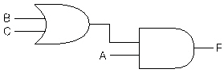
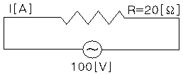

정보기기운용기능사 (2003-01-26 기출문제)
1과목: 전산 기초 이론
1. 전자계산조직(EDPS)의 CPU에 해당하는 것은 사람의 어느 부분인가?
- 머리
- 심장
- 입
- 다리
(정답률: 89%)

2. 다음 중 연산 장치에 대한 설명으로 옳은 것은?
- 연산 명령을 해석한다.
- 연산 작용은 주로 덧셈기에서 한다.
- 연산은 주로 10진법으로 한다.
- 계산기에 필요한 명령을 기억한다.
(정답률: 61%)
3. 다음 그림의 논리식은 어느것에 해당 하는가?

- F = A·B+B·C
- F = A·B·C
- F = A·(B+C)
- F = A·(B-C)
(정답률: 87%)
4. 컴퓨터를 더욱 효율적으로 사용하기 위하여 작성된 동작 프로그램의 집합과 관계 깊은 것은?
- 스프레드 시트(Spread Sheet)
- 프로그램 언어(Program Language)
- 시스템 소프트웨어(System Software)
- 전자 우편(Electronic Mail)
(정답률: 78%)
5. 전자계산기의 프로그램용 언어에 속하지 않는 것은?
- 기계어
- 어셈블리 언어
- 컴파일러 언어
- 과학용 언어
(정답률: 81%)
6. 1Mbyte(메가 바이트)의 용량은 정확히 몇(byte)인가?
- 1,048,576byte
- 1,000,000byte
- 1,024,000byte
- 100,000byte
(정답률: 51%)
7. 컴퓨터의 5대 기본 요소가 아닌 것은?
- 제어장치
- 변복조장치
- 입·출력장치
- 기억장치
(정답률: 88%)
8. 주기억장치에서 번지(Address)를 부여하는 최소 단위는?
- nibble
- word
- byte
- bit
(정답률: 57%)
9. Encoder에 대한 설명으로 적합한 것은?
- 입력 신호를 2진수로 부호화하는 회로이다.
- 2진 부호를 10진 부호로 변환하는 회로이다.
- 출력 단자에 신호를 보내는 회로이다.
- 입력 신호를 해독하는 해독기이다.
(정답률: 60%)
10. 다음 중 UNIX 운영체제의 기초가 되는 언어는?
- BASIC
- PASCAL
- ASSEMBLY
- C-언어
(정답률: 69%)
2과목: 정보 기기 운용
11. 50[Ω]의 저항에 100[V]의 전압을 가했을때 소비되는 전력은 몇[W]인가?(단,자체선로에 대한 내부저항치는 무시한다.)
- 100
- 2
- 200
- 5000
(정답률: 50%)
12. 컴퓨터 바이러스 중 부트 바이러스에 감염되었을때 나타나는 증상이 아닌 것은?
- 디스크의 실행파일의 날짜가 최근으로 바뀌어 있다.
- 디스크가 부팅이 되지 않는다.
- 디스크의 내용을 읽어 들이는 속도가 현저하게 느려진다.
- 디스크를 부팅하는 시간이 평소보다 오래 걸린다.
(정답률: 74%)
13. 전자계산기나 단말장치에서 사용되는 디지탈신호를 아날로그 전송회선에 적당하도록 2진 직류신호를 교류신호로 변환하는 기능을 가진 일종의 신호변환기는?
- 모뎀
- 회선 종단장치
- 레지스터
- 누산기
(정답률: 69%)
14. 다음중 컴퓨터의 입출력 장치들만 모은 것은?
- 광학문자판독기, 디스크, 테이프, 다이오드
- 카드리더, 라인프린터, 레지스터, 콘-솔
- 모뎀, 인터페이스 카드, 다중화기, 롬
- 카드리더, 테이프, 마우스, 라인프린터
(정답률: 74%)
15. 20[Ω]의 저항에 100[V]의 전압을 가하면 몇[A]의 전류가 흐르겠는가?

- 5
- 3
- 2.5
- 1.5
(정답률: 83%)
16. 데이터가 컴퓨터와 병렬전송으로 되는 것은?
- 텔렉스
- 팩시밀리
- 모뎀
- 프린터
(정답률: 57%)
17. 다음 중 저항 600[Ω]의 백열전구가 100[V]의 전위차가 있는 곳에서 1시간에 얼마나 열을 내는가?
- 61[Kcal]
- 600[cal]
- 14.4[Kcal]
- 33.3[Kcal]
(정답률: 59%)
18. 신호를 부호화하는 장치는?
- 컨버터(Converter)
- 트랜스 멀티플렉서(Trans-multiplexer)
- 엔코더(Encoder)
- 모뎀(Modem)
(정답률: 60%)
19. 다음 중 디스켓의 보관 요령 중 옳은 것은?
- 기름으로 닦아준다.
- 무거운 책을 올려놓는다.
- 보관용 상자에 넣어둔다.
- 가끔 물로 닦아준다.
(정답률: 87%)
20. 다음중 다이얼의 3요소가 아닌 것은?
- 메이크 율
- 시간 조절기
- 임펄스 속도
- 최소휴지시간
(정답률: 54%)
21. 어떤 도체에 t초 동안에 I[A]전류가 흐를 때 전기량 Q[C]는?
- Q = t/I
- Q = I/t
- Q = 1/(I·t)
- Q = I·t
(정답률: 54%)
22. 다음 중 등화기(Equalizer)의 기능은?
- 신호증폭
- 교류신호 증폭의 유무감지
- 직류증폭
- 진폭, 주파수 및 위상 왜곡 보상
(정답률: 67%)
23. 다음 중 최근 통신실에 주로 사용되는 배선 방법으로 이전이나 증설이 편리한 것은?
- 천장 배선용 배관
- 액세스 플로어(Access Floor)
- 벽면용 폴(Pole)
- 3선 케이블 덕(Duck)
(정답률: 73%)
24. 여러개의 Digital 신호를 모아서 한개의 고속 디지털 신호를 만드는 것을 무엇이라 하는가?
- 다중화
- 표본과
- 고속화
- 양자화
(정답률: 67%)
25. 대전에 의해 물체가 띠고 있는 것을 전하라 한다. 전자의 전하량[C]을 나타낸 것은?
- + 9.10956 × 10-31
- + 1.67261 × 10-27
- - 1.60219 × 10-19
- + 1.67491 × 10-27
(정답률: 70%)
26. 광학적인 방법으로 문자나 그림을 읽어들여 전기적인 신호로 바꾸어 통신망을 이용해 원거리에서 이를 받아 복사해내는 사무기기를 나타낸 것은?
- 팩시밀리
- 전자회의
- 복사기
- 전자우편
(정답률: 77%)
27. 정보기기 관련 시설에 대한 화재 발생시 사용할 수 있는 소화기로 가장 적당한 것은?
- 프레온 가스소화기
- 스프링클러
- 이산화탄소 소화기
- ABC 분말소화기
(정답률: 87%)
28. 단말기 작업 자세로서 적당하지 않는 것은?
- 화면과의 거리는 40 - 50㎝가 적당하다.
- 손등을 팔과 수평으로 유지한다.
- 의자 높이를 적당하게 조정한다.
- 무릎의 각도는 45° 이하를 유지한다.
(정답률: 80%)
29. 다음 중 프린터와 관계없는 단위는?
- LPM
- CPI
- IRG
- CPS
(정답률: 80%)
30. 워드프로세서 작업 형태 중 문서 전담자를 두고 문서를 작성하는 것으로 가동률이 가장 높은 것은?
- 세미 오픈 형태(semi open)
- 클로즈(close) 형태
- 오픈 형태(open)
- 세미 클로즈(semi close)
(정답률: 43%)
3과목: 정보 통신 일반
31. 데이터통신으로 사용될 수 있는 분야가 아닌 것은?
- 정보의 조회(Information Retrieval)
- 신호전류 증폭(Signal Amplification)
- 메시지 교환(Message Switching)
- 프로세서(Processor)간의 데이터 교환
(정답률: 56%)
32. 데이터 통신속도의 종류가 아닌 것은?
- 데이터 전송속도
- 데이터 인자속도
- 데이터 신호속도
- 데이터 변조속도
(정답률: 72%)
33. 등화기(Equalizer)란 무엇인가?
- 누화를 방지하기 위한 장치이다.
- 송신측과 수신측에서 서로 신호의 레벨을 같게 하는것이다.
- 잡음의 발생 유무를 감지하기 위한 장치이다.
- 진폭,주파수 및 위상왜곡을 보상하기 위한 장치이다.
(정답률: 60%)
34. 다음 전송선로 중 전송 속도와 통신용량면에서 장점이 가장 큰 것은?
- 동축 케이블
- 광섬유 케이블
- 폼스킨 케이블
- 도파관
(정답률: 75%)
35. 다중화 회선을 얻는데 필요한 변조방식이라고 할 수 없는 것은?
- TDM
- FDM
- WDM
- ATM
(정답률: 54%)
36. 데이터통신 용량에 영향을 미치지 않는 것은?
- 대역 주파수
- 신호대 잡음(S/N)
- 감쇄
- 코딩 레벨(coding level)
(정답률: 59%)
37. 데이터통신 방식에서 채택되고 있는 오류의 검출 방식과 관계 없는 것은?
- CRC 방식
- 밸브 체크 방식
- 군계수 체크 방식
- 일정 마아크 방식
(정답률: 42%)
38. 전자계산기의 데이터처리 방식 중 일괄 처리 방식(Batch Process System)이 아닌 것은?
- 데이터 수집(Data Entry) 처리
- 오프-라인(Off-Line) 처리
- 시분할(Time Sharing) 처리
- 원격(Remote) 처리
(정답률: 52%)
39. 컴퓨터 네트워크의 목적이 아닌 것은?
- 데이터정보 자원의 공유
- 컴퓨터 하드웨어 자원의 공유
- 비밀관리번호의 공유
- 컴퓨터 소프트웨어 자원의 공유
(정답률: 86%)
40. 데이터통신의 특성에 관한 설명 중 적합하지 않은 것은?
- 규격이 모두 통일되어 있으므로 타기종과 언제나 어느 것이나 자유로이 접속이 가능하다.
- 다채로운 단말장치와 이에 따른 소프트웨어의 개발이 계속 요구된다.
- 데이터의 즉시 처리가 가능하며, 공동이용이 가능하다.
- 각지역에서 분산관리하고 있던 정보나 데이터를 일원적으로 관리할 수 있다.
(정답률: 50%)
41. 프로토콜은 전송하고자 하는 정보의 프레임 구성에 따라 어떤 방식이 있는가?
- 상위레벨 방식, 하위레벨 방식
- 문자 방식, 바이트 방식, 비트 방식
- 폴링 방식, 셀렉션 방식, 콘텐션 방식
- 동기 방식, 비동기 방식
(정답률: 58%)
42. 개인용 컴퓨터를 통해 이용자간에 서신을 상호 교환할 수 있는 정보통신 서비스를 무엇이라 하는가?
- 전자회의
- 하이텔서비스
- 데이터베이스
- 전자우편
(정답률: 78%)
43. 데이터통신에 있어서 변조와 복조를 수행하는 장비는?
- 개인컴퓨터(PC)
- 허브(HUB)
- 케이블(CABLE)
- 모뎀(MODEM)
(정답률: 84%)
44. 통신망 중 방송망으로 이용되지 않는 것은?
- 메시지 교환망
- 근거리 통신망
- 패킷 라디오망
- 인공 위성망
(정답률: 69%)
45. LAN의 이점이라고 볼 수 없는 것은?
- 고속의 정보전송이 가능하다.
- 외부 통신망의 제약을 받지 않는다.
- 다른 정보통신기기와도 통신이 가능하다.
- 방송 형태로 서비스이용이 불가능하다.
(정답률: 77%)
46. 전송선로의 2차 정수에 해당되지 않는 것은?
- 감폭정수
- 특성임피던스
- 감쇠정수
- 위상정수
(정답률: 33%)
47. DSU(Data Service Unit)에 대한 설명 중 맞는 것은?
- 동축케이블을 사용한다.
- 원격지 디지털 전송을 위해 필요한 장비이다.
- 아날로그로 변조된 신호를 디지탈로 복조시킨다.
- 병렬 데이터만 변복조된다.
(정답률: 48%)
48. 정보(데이터) 통신에서 신속하고 정확한 신뢰성 있는 정보를 송수신하기 위해 정해 놓은 규약, 규정을 무엇이라 하는가?
- Program
- Communication
- Protocol
- Process
(정답률: 80%)
49. 패킷교환방식에 대한 설명으로서 옳지 않은 것은?
- 교환기나 통신회선에 장애가 발생한 경우 우회(대체) 경로를 선택할 수 있다.
- 속도가 서로 다른 단말기간 데이타 교환이 가능하다.
- 메세지를 일정 단위의 크기로 분할하여 전송한다.
- 패킷교환방식은 디지털전송로보다 아날로그전송로에 유리하다.
(정답률: 70%)
50. 국제통신용 정지위성인 INTELSAT의 지상 높이는?
- 25,000[km] 정도
- 6,000[m] 정도
- 35,800[km] 정도
- 6,000[km] 정도
(정답률: 72%)
4과목: 정보 통신 업무 규정
51. 부가통신사업을 경영하고자 하는 자는 누구에게 신고하여야 하는가?
- 통신위원회위원장
- 정보통신부장관
- 한국통신사장
- 기간통신사업자
(정답률: 74%)
52. 컴퓨터 등 정보처리능력을 가진 장치에 의하여 전자적인 형태로 작성되어 송·수신 또는 저장된 정보를 무엇이라고 하는가?
- 통신정보
- 전자문서
- 사이버몰
- 패킷정보
(정답률: 70%)
53. 다음 중 전산실 및 통신센터 환경조건 중 온도 유지 범위로 가장 적합한 범위는?
- 5℃ ∼ 15℃
- 10℃ ∼ 20℃
- 16℃ ∼ 28℃
- 25℃ ∼ 35℃
(정답률: 69%)
54. 정보통신 역무제공 승인을 얻어 타인에게 역무를 제공하고자 하는자가 해서는 아니되는 행위는?
- 타인에게 사용하게 할 목적으로 다중화장치 등을 회선에 접속 사용하는 행위
- 전자계산기등을 사용하여 수집, 보관된 정보를 가공하여 타인에게 제공하는 행위
- 회선을 사용하여 타인의 정보를 수집, 가공처리하는 행위
- 회선을 사용하여 수집, 정리, 보관된 정보를 타인에게 제공하는 행위
(정답률: 33%)
55. 통신사업자가 제공하는 전기통신역무별로 요금 및 이용 조건을 정한 것을 무엇이라고 하는가?
- 이용규정
- 역무조건
- 이용약관
- 요금규정
(정답률: 81%)
56. 우리나라의 전기통신사업은 어떻게 구분하는가?
- 기간통신사업과 별정통신사업, 부가통신사업
- 특정통신사업과 일반통신사업, 공공통신사업
- 전용회선사업과 교환회선사업, 비교환회선
- 공중통신사업과 사설통신사업, 구내통신사업
(정답률: 85%)
57. 다음 중 정보통신부장관의 업무로 볼 수 없는 것은?
- 전기통신 기본계획수립
- 전기통신에 관한 년차보고
- 전기통신에 관한 종합적인 정부시책 강구
- 전기통신사업 경영관리
(정답률: 65%)
58. 정보통신부장관이 단말장치에 대한 기술기준을 정하는 목적에 해당되지 않는 것은?
- 전기통신설비의 운용자와 이용자의 안전을 위하여
- 국간 교환설비의 예비회선 확보를 위하여
- 전기통신망 보호를 위하여
- 전기통신역무의 품질유지를 위하여
(정답률: 56%)
59. ITU-TS 표준 권고안 시리즈 중 표준 권고에 해당하지 않는 것은?
- R 시리즈
- T 시리즈
- V 시리즈
- X 시리즈
(정답률: 48%)
60. 컴퓨터프로그램보호법에 적용되는 대상은?
- 프로그램 언어
- 개작된 프로그램
- 규약
- 해법
(정답률: 58%)